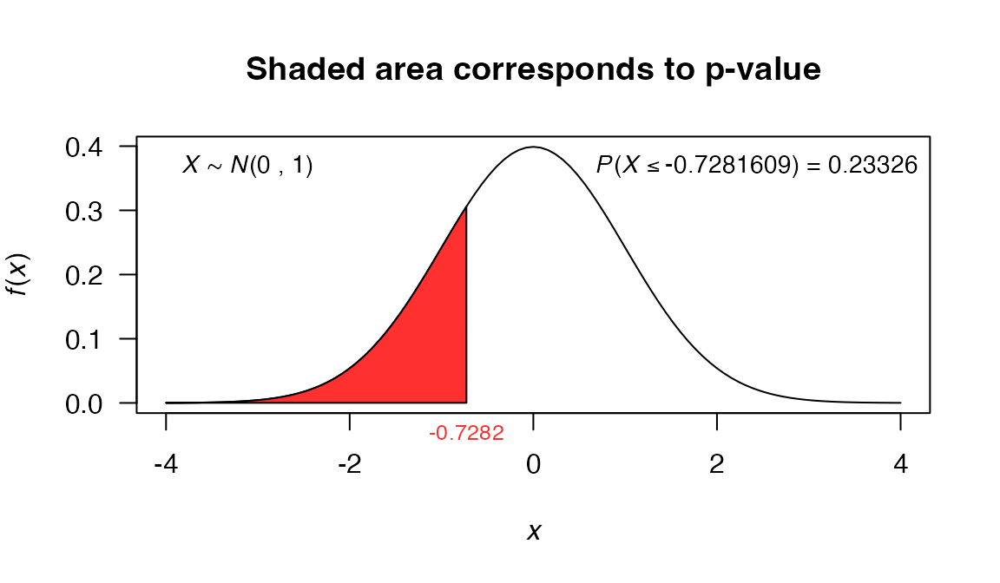
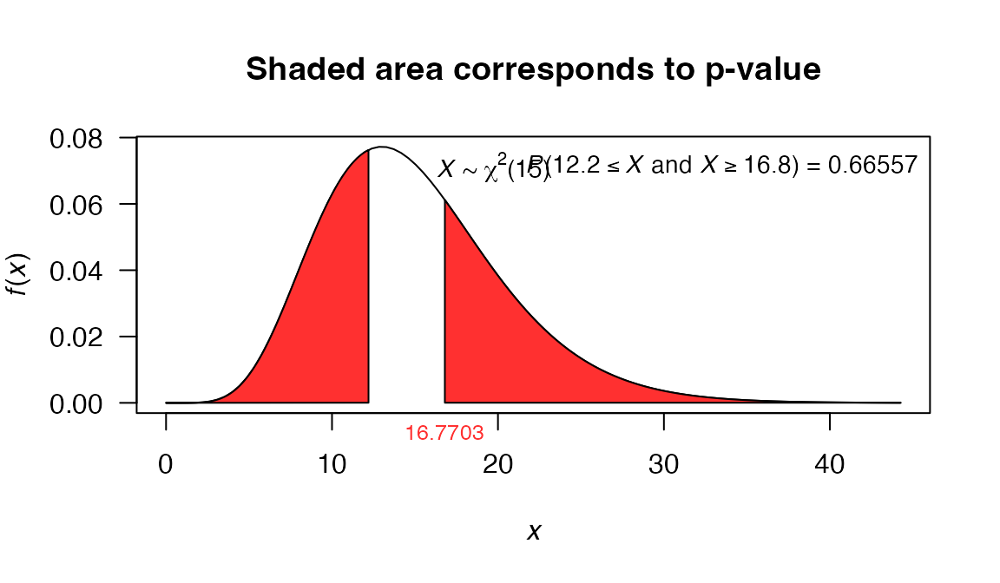

Univariate tests
Freddy Hernandez and Angie Lopez
2019-03-05
univariate_tests.RmdIntroduction
In this vignette we explain how to use the functions available in the stests package to hypothesis testing. Additionally, we compare our functions with the built-in functions t.test and var.test from stats package.
The functions covered in this vignette are:
-
z_test: function to perform z-test using values. -
z.test: function to perform z-test using vectors. -
t_test: function to perform t-test using values. -
t.test: built-in R function fromstatspackage to perform t-test using vectors. -
var_test: function to perform \(\chi^2\)-test or F-test using values. -
var.test: fuction that generalizes thevar.testfunction fromstatspackage, this function uses vectors. -
print.htest: generic function to print objects withhtestclass. -
plot.htest: generic function to plot objects withhtestclass.
stests package
Any user can download the stests package from GitHub using the next code:
if (!require('devtools')) install.packages('devtools')
devtools::install_github('fhernanb/stests', force=TRUE)Next, the package must be loaded into the current session using:
library(stests)z-test for population mean \(\mu\)
The objective in this type of problems is to test \(H_0: \mu = \mu_0\) against
- \(H_a: \mu < \mu_0\),
- \(H_a: \mu \neq \mu_0\),
- \(H_a: \mu > \mu_0\),
Using the information of a random sample \(X_1, X_2, \ldots, X_n\) from a Normal population with known variance \(\sigma^2\).
z-test using z_test function
The z_test function can be used for students or instructors to solve textbook’s problems in which the information is summarized with values. In the next examples we show the utility of this function.
Example 8.6 from Devore (2016)
A manufacturer of sprinkler systems used for fire protection in office buildings claims that the true average system-activation temperature is 130°F. A sample of \(n=9\) systems, when tested, yields a sample average activation temperature of 131.08°F. If the distribution of activation times is normal with standard deviation 1.5°F, does the data contradict the manufacturer claim at significance level \(\alpha=0.01\)?
In this example we have \(\bar{x}=131.08\), \(n=9\) with \(\sigma=1.5\). The objective is to test \(H_0: \mu = 130\) against \(H_a: \mu \neq 130\).
The code to perform the test is:
z_test(meanx=131.08, nx=9, sigma2=1.5^2, mu=130, alternative='two.sided')
##
## Z test for mean
##
## data: x
## Z = 2.16, p-value = 0.03077
## alternative hypothesis: true is not equal to 130
## 95 percent confidence interval:
## 130.10 132.06
## sample estimates:
## mean of x
## 131.08The last output is the same as the obtained in Devore (2016). Additionally, we can observe that the output has the same print due to the generic print function for htest objects.
If we want to depict the p-value for the test, we could save the result in an object and then use the plot.htest function as follows:
Example 10.3 from Walpole (2012)
A random sample of 100 recorded deaths in the United States during the past year showed an average life span of 71.8 years. Assuming a population standard deviation of 8.9 years, does this seem to indicate that the mean life span today is greater than 70 years? Use a 0.05 level of significance.
In this example we have \(\bar{x}=71.8\), \(n=100\) with \(\sigma=8.9\). The objective is to test \(H_0: \mu = 70\) against \(H_a: \mu \leq 70\).
The code to perform the test is:
res2 <- z_test(meanx=71.8, nx=100, sigma2=8.9^2, mu=70, alternative='greater')
res2
##
## Z test for mean
##
## data: x
## Z = 2.0225, p-value = 0.02156
## alternative hypothesis: true is greater than 70
## 95 percent confidence interval:
## 70.33608 Inf
## sample estimates:
## mean of x
## 71.8
plot(res2, shade.col='firebrick1', col='firebrick1')
t-test for population mean \(\mu\) and for the difference in means \(\mu_1-\mu_2\)
The objective in this type of problems is to test \(H_0: \mu = \mu_0\) against
- \(H_a: \mu \leq \mu_0\),
- \(H_a: \mu \neq \mu_0\),
- \(H_a: \mu \geq \mu_0\),
Aqui debemos completar ….
t-test using t_test function
Aqui debe ir un parrafo introductorio.
A continuacion se muestran tres ejemplos de como usar la funcion t_test.
Example 9.2 from apellido (ano), one population
The average length of time for students to register for fall classes at vertain college has been 50 minutes with a standard deviation of 10 minutes. A new registration procedure using modern computing machines is being tried. If a random sample of 12 students had an average registration time of 42 minutes with standard desviation of 11.9 minutes under the new system, test the hypothesis that the population mean is now less than 50, using a level of significance of 0.05. Assume the population of times to be normal.
In this example we have \(s=11.9\), \(n=12\) and \(\mu=42\). The objective is to test \(H_0: \mu = 50\) minutes against \(H_a: \mu < 50\).
The code to perform the test with \(\alpha=0.05\) significance is:
t1 <- t_test(meanx=42, varx=11.9^2, nx=12, mu=50,
alternative='two.sided')
t1
##
## One Sample t-test
##
## data: meanx = 42, var = 141.61 and nx = 12
## t = -2.3288, df = 11, p-value = 0.03995
## alternative hypothesis: true mean is not equal to 50
## 95 percent confidence interval:
## 34.4391 49.5609
## sample estimates:
## mean of x
## 42
plot(t1, shade.col='gray80', col='red')
The result given for t-test matches with the autor result and in addition, it provides a confidence interval for the average and the p-value that will help the user in the decision making of the hypothesis test.
Example 13.5 from apellido (ano), two populations with equal variances
In the comparison of two kind of paint a consumer testing service finds that four 1-gallon cans of one brand cover on the average 546 square feet with a standard deviation of 31 square feet, whereas four 1-gallon cans of another brand cover on the average 492 square feet with a estandard deviation of 26 square feet. Assuming that the two population sampled are normal and have equal variances, test the null hypothesis \(H_0: \mu_1-\mu_2 = 0\) against the alternative hypothesis \(H_a: \mu_1-\mu_2 > 0\) at the 0.05 level of significance.
The data we have is: \(s_1=31\), \(n_1=4\), \(\mu_1=546\), \(s_2=26\), \(n_2=4\), \(\mu_2=492\).
The code to perform the test with \(\alpha=0.05\) significance is :
t_test(meanx=546, varx=31^2, nx=4,
meany=492, vary=26^2, ny=4,
alternative='two.sided', var.equal=TRUE)
##
## Two Sample t-test
##
## data: meanx = 546 , nx = 4 , meany = 492 and ny = 4
## t = 2.6693, df = 6, p-value = 0.03706
## alternative hypothesis: true difference in means is not equal to 0
## 95 percent confidence interval:
## 4.499149 103.500851
## sample estimates:
## mean of x mean of y
## 546 492Example 9.12 from Ugarte (ano), two populations with unequal variances
A bottle water company acquires irs water from two independet sources, X and Y. The company suspects that the sodium content in the water from source X is less than the sodium content for water from source Y. An independent agency measures the sodium content in 20 samples from source X and 10 samples from source Y and stores them in data frame water. Is there statistical evidence to suggest the average sodium content in the water from source X is less than the average sodium content in the water from source Y? The measurements for the sodium values are mg/L. Use an \(\alpha\) level of 0.05 to test the appropiate hypotheses.
In this problem we have \(S_{x}^2=122.78\) \(S_{Y}^2=5.29\), \(\mu_X=76.4\) \(\mu_Y=81.2\).
we have to test the hypothesis: \(H_0:\mu_X-\mu_Y = 0\) versus \(H_1:\mu_X-\mu_Y < 0\)
using the function t_test we obtain the next result.
t_test(meanx=76.4, varx=122.78, nx=20,
meany=81.2, vary=5.29, ny=10,
alternative='less', mu=0, var.equal=FALSE)
##
## Welch Two Sample t-test
##
## data: meanx = 76.4, nx = 20, meany = 81.2 and ny = 10
## t = -1.8588, df = 22.07, p-value = 0.03822
## alternative hypothesis: true difference in means is less than 0
## 95 percent confidence interval:
## -Inf -0.366523
## sample estimates:
## mean of x mean of y
## 76.4 81.2And we obtain the same results of the author.
\(\chi^2\)-test for population variance \(\sigma^2\)
The objective in this type of problems is to test \(H_0: \sigma^2 = \sigma^2_0\) against
- \(H_a: \sigma^2 < \sigma_0^2\),
- \(H_a: \sigma^2 \neq \sigma_0^2\),
- \(H_a: \sigma^2 > \sigma_0^2\),
using the information of a random sample \(X_1, X_2, \ldots, X_n\) from a population distributed as \(N(\mu, \sigma^2)\).
\(\chi^2\)-test using var_test function
The var_test function can be used to solve textbook’s problems in which the information is summarized with values. In next examples we show the utility of this function.
Example 7.7.1 from Wayne & Chad (2013)
The purpose of a study by Wilkins et al. (A-28) was to measure the effectiveness of recombinant human growth hormone (rhGH) on children with total body surface area burns > 40 percent. In this study, 16 subjects received daily injections at home of rhGH. At baseline, the researchers wanted to know the current levels of insulin-like growth factor (IGF-I) prior to administration of rhGH. The sample variance of IGF-I levels (in ng/ml) was 670.81. We wish to know if we may conclude from these data that the population variance is not 600.
In this example we have \(s^2=670.81\), \(n=16\). The objective is to test \(H_0: \sigma^2 = 600\) against \(H_a: \sigma^2 \neq 600\).
The code to perform the test is:
res3 <- var_test(varx=670.81, nx=16, null.value=600, alternative='two.sided')
res3
##
## X-squared test for variance
##
## data: varx = 670.81 and nx = 16
## X-squared = 16.77, df = 15, p-value = 0.6656
## alternative hypothesis: true variance is not equal to 600
## 95 percent confidence interval:
## 366.0509 1606.8235
## sample estimates:
## variance of x
## 670.81
plot(res3, shade.col='darkorange1', col='darkorange1')
\(F\)-test for equality of variances
The objective in this type of problems is to test bla bla bla.
References
- Devore, J. L. (2016), Probability and Statistics for engineering and the sciences, Cengage.
- Walpole, R. E., Myers, R. H., Myers, S. L. & Ye, K. (2012), Probability & Statistics for Engineers & Scientists, Prentice Hall.
- Wayne, D. & Chad, C. (2013), BIOSTATISTICS: A Foundation for Analysis in the Health Sciences, Wiley.
- Ugarte, M.L., Militino, A.F., Arnholt, A.T. (2008), Probability and statistics with R, CRC Press.